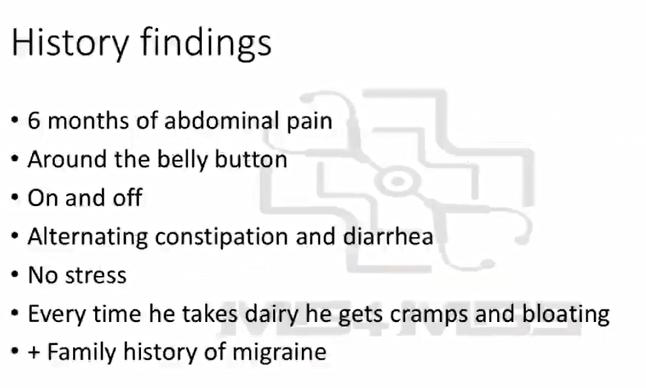

Source: Dr. Amir workshop — GIT 2026 / CLASS 4 MID GI CASE (Aug 2026 drop) · Specialty: gastroenterology
A 20-year-old man presents to your general practice complaining of chronic abdominal pain. Your task: history taking for six minutes.
This case now sits within the bloating/young-patient chronic abdominal pain cluster (previously taught alongside the other two young-patient cases — IBD and coeliac disease).
How these findings emerge through the structure:
The picture is chronic, vague, on-and-off crampy abdominal pain with alternating bowel habit — superficially IBS-like. But there is a specific, reproducible dairy trigger (cramps and bloating after dairy). Because IBS is a diagnosis of exclusion, a positive identifiable trigger takes priority: the top differential is lactose intolerance, with IBS retained lower on the list unless other IBS features dominate.
Abdominal migraine: some call this case "the abdominal migraine" because of the family history of migraine. Formal criteria for abdominal migraine exist, but the final criterion requires that the symptoms are not better explained by another disorder — you must rule out other conditions first. It might only be considered where the patient does not fulfil IBS criteria and has a supportive personal/family history of migraine or headaches. In this station it is best not to raise abdominal migraine at all — the dairy trigger explains the presentation.
Explain simply: "You have a condition called lactose intolerance. Your bowel cannot properly handle a sugar found in dairy products called lactose. Whenever you eat dairy products — milk, yoghurt, cheese — you get symptoms: bloating, abdominal pain, diarrhoea, and sometimes nausea."
Note: the workshop transcript used the phrase "sensitive or allergic to a sugar"; see corrections — lactose intolerance is an enzyme (lactase) deficiency causing malabsorption, not an allergy, and this distinction should be preserved even in lay explanations.
Reasoning to give the patient: the pain is triggered by eating dairy products; you also have bloating, cramps and diarrhoea with the dairy exposure — the full symptom pattern fits.
At the bottom of the differential list, add IBS.
AMC has used three young-patient chronic abdominal pain cases: IBD, coeliac disease, and lactose intolerance. Put IBS beside them — there is a very old, famous AMC IBS case.
IBS diagnostic criteria — Rome IV: IBS is diagnosed using the Rome IV criteria, as a diagnosis of exclusion. Importantly, stress is NOT an essential criterion. Most IBS patients do have a background stressor, and it is worth screening for, but the diagnosis rests on the Rome IV criteria, not on the presence of stress — stress is too hard to define to be a diagnostic criterion. Criteria exist precisely because IBS is a condition that needs formal criteria to be diagnosed reliably.

Reviewed by: history-taking-expert (Australian clinical supervisor, FRACP, NSW teaching hospitals) · fact-checked against the irStudy medical textbook RAG index.